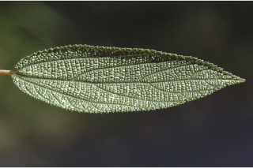
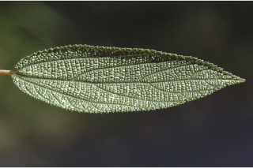
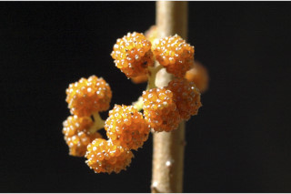
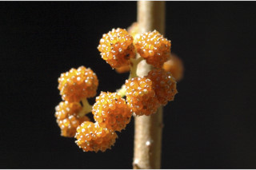

| Leaves : | Leaves simple , alternate , spiral ; stipule lanceolate , bifid , 1 cm long, connate , caducous and leaving scar ; petiole 0.8-4 cm long, terete , grey hirsute ; lamina 5-15 (-23) x 1.5-4 (-6) cm, narrow oblong or lanceolate , apex acute to acuminate , base rounded , margin serrate , coriaceous , suface bullate with scattered hairs above, canescent beneath; 3-nerved at base; midrib canaliculate above; secondary_nerves 3-6 pairs, ascending towards apex ; tertiary_nerves horizontally percurrent . |


 

 
